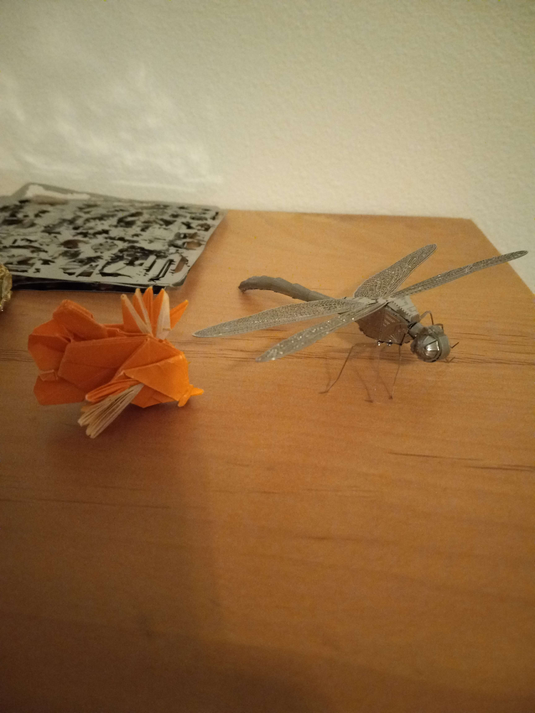

I unplugged from technology on Saturday. I gave my phone to one of my housemates, but at one point I had to take it back from him to text my girlfriend that I couldn’t talk to her. I don’t know how I managed to forget that. I also had to do a lot of homework in advance because I’ve been swamped this quarter, so that was annoying.
I went for a hike in the arb in the afternoon and when I got to the bus stop I realized that if I hadn’t brought my watch I wouldn’t know what time it was. It’s interesting how we depend on our phones for things as simple as that. Anyway though, I went hiking and it was really cold and I used the maps on the trail to navigate, which wasn’t hard cause I take walks there often. I did explore a little there and I found some trails I’d never been on before. It seems like it’s frosty all the time there.
Usually I use my bluetooth earbuds to listen to audiobooks or call my girlfriend when I’m walking but I obviously couldn’t do that this time. It was kinda nice to hear the sounds of the forest and be alone with my thoughts. Maybe I should do that more often. I remember reaching into my pocket for my phone to take a picture. Obviously it wasn’t there.
When I got home instead of watching TV or playing video games (I’ve been really getting into Tactical Breach Wizards lately), I folded an origami lion fish and built a dragonfly from a metal earth kit.
Overall, I think it was a good experience. In terms of opting out of smart phones, definitely not sustainable, especially in a long distance relationship and as a college student. I'd like to do it again sometime though. It was kinda nice, so it could be a once in a while thing.